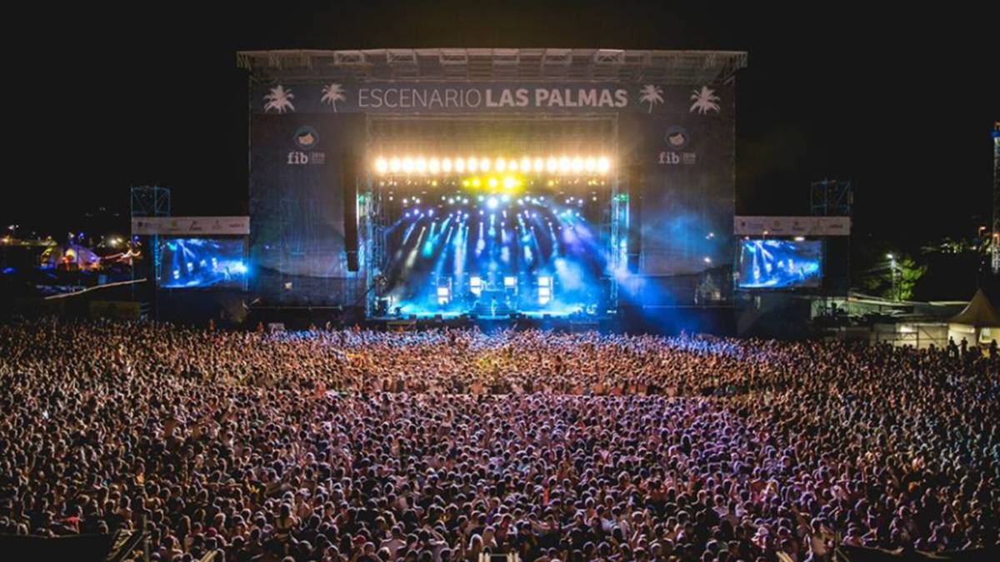
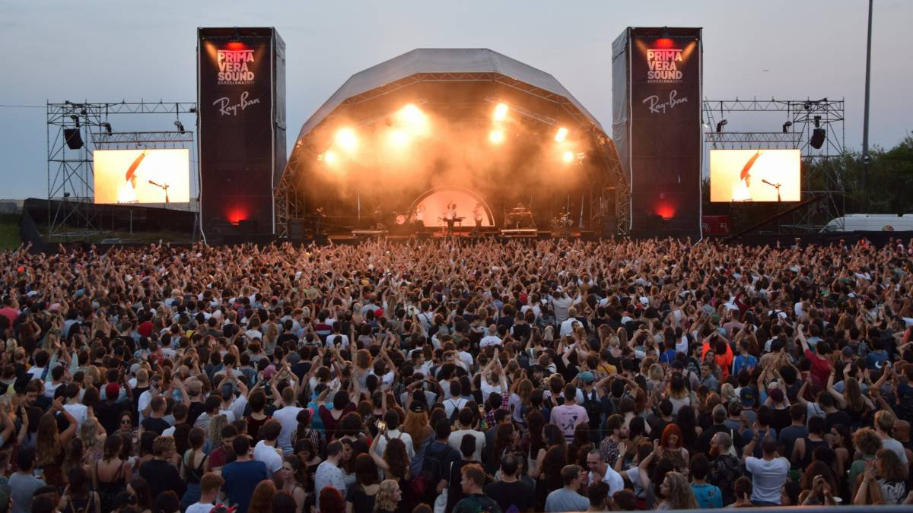

Los festivales nacionales más importantes

Arenal Sound es un festival que se desarrolla cada año en Burriana, Valencia, al que acuden miles de jóvenes
con ganas de divertirse. A lo largo de 9 ediciones son miles y miles los jovenes que han pasado por sus escenarios,
sus playas, y han descubierto la magia de este festival. El año que viene se enfrentan a su décima edición y
prometen crear algo inigualable.
¿Cuándo se celebra? Del 30 de julio al 4 de agosto de 2019
¿Dónde se celebra? Burriana
Página web del festival

Festival Internacional de Benicasim
FIB esta posicionado como uno de los festivales más importantes en el panorama nacional. Es uno de los festivales nacionales
con mayor afluencia de público y que se posiciona como uno de los carteles más fuertes año tras año.
¿Cuándo se celebra? Del 18 al 21 de julio de 2019
¿Dónde se celebra? Valencia
Página web del festival

El Primavera Sound es un festival que se celebra cada año en Cataluña a miles de personas. Con artistas en sus filas
de la talla de Kendrick Lamar, Justice o Daft Punk es uno de lo más aclamados por el público.
¿Cuándo se celebra? Del 30 de mayo al 1 de junio de 2019
¿Dónde se celebra? Barcelona
Página web del festival